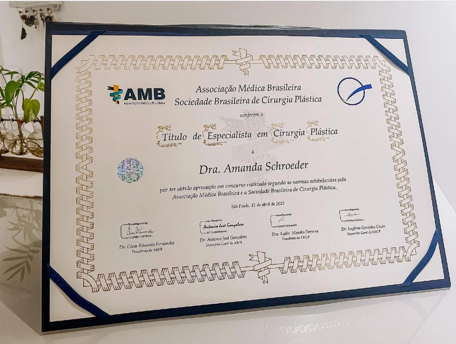
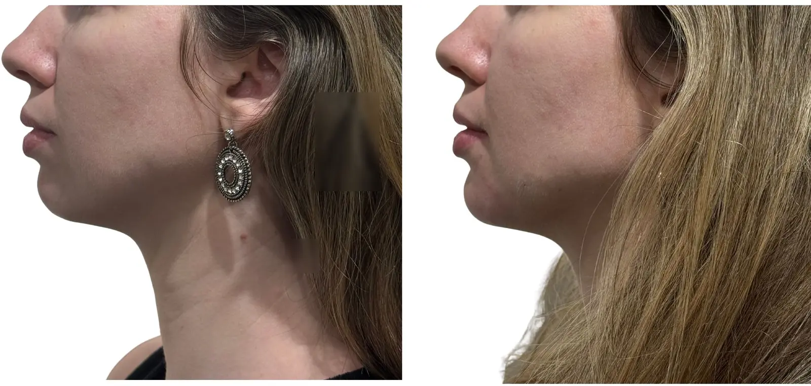

Som opcional
Por que a cirurgia plástica se tornou sua especialidade?
Conheça a trajetória da Dra. Amanda e o raciocínio que orienta sua forma de indicar, operar e acompanhar cada paciente.
Para quem busca uma aparência mais descansada e jovem, sem transformar suas feições. Para quem busca uma aparência mais condizente com seu momento de vida.
Clínica LIV Faria Lima ·R. Pais Leme, 215 - cj 710, Pinheiros - São Paulo.

Com graduação e residência médica em Cirurgia Plástica pela UNICAMP, além de pós-graduação pelo Einstein, a Dra. Amanda conduz avaliações com rigor técnico, senso estético e responsabilidade.
Antes de propor qualquer procedimento, ela analisa detalhadamente a anatomia, o dinamismo da expressão e as expectativas de cada paciente. A decisão final é sempre personalizada: pode ser operar, associar tratamentos não cirúrgicos ou não intervir naquele momento.

Conheça a trajetória da Dra. Amanda e o raciocínio que orienta sua forma de indicar, operar e acompanhar cada paciente.
Naturalidade, discrição e respeito à individualidade — realçar sem exagerar, sem receita de bolo e sem apagar aquilo que torna cada paciente única.
Sensibilidade estética, delicadeza e atenção aos detalhes na escuta, no planejamento e na busca por resultados naturais.

Reconhecimento formal pela AMB e pela Sociedade Brasileira de Cirurgia Plástica, reforçando formação técnica e compromisso com uma prática médica segura e criteriosa.
O planejamento facial considera sustentação, pele, volumes, contorno mandibular e pescoço. A proposta é buscar uma aparência mais jovem, descansada e proporcional — sem aspecto esticado ou artificial.
A consulta é o momento de desenhar um plano exclusivo para você. É onde definimos o que realmente faz sentido para você — seja uma cirurgia, procedimentos injetáveis e tecnologias ou o acompanhamento preventivo —, sempre priorizando a naturalidade, a proporção e a sua segurança.
Para flacidez, contorno do rosto e pescoço quando o envelhecimento exige uma abordagem estrutural.
Para excesso de pele, bolsas e aparência cansada, preservando o olhar natural.
Conhecer blefaroplastia →Regiões que podem protagonizar o tratamento como área principal ou de forma complementar.
Para suavizar movimentos, restaurar proporções e estimular colágeno com indicação individual e sem padronização.
Conhecer os injetáveis →A consulta organiza queixas da face, olhar, pescoço e pele para definir se faz sentido operar, tratar ou acompanhar.
Entender avaliação →Para quem deseja avaliar mama, contorno corporal ou cirurgia íntima, o plano parte de anatomia, segurança e resultado coerente — sem padronização.
Mastopexia, prótese ou redução conforme pele, cicatriz, sustentação e objetivo de proporção.
Lipo, abdominoplastia e contorno corporal conforme pele, gordura, cicatriz e segurança.
Ninfoplastia com acolhimento, conversa clara e respeito à anatomia e aos limites de cada caso.
Na avaliação, a pergunta não é apenas o que pode ser feito — é o que deve ser feito. O plano considera anatomia, expressão, rotina, expectativas e limites de segurança para indicar com critério e evitar excessos.
Traços, expressão e proporções orientam o planejamento.
A decisão considera anatomia, expectativa e momento de vida.
Operar, associar tratamentos ou não intervir podem ser decisões corretas.

A avaliação acontece em uma estrutura pensada para unir consulta, planejamento e preparo pré-operatório, facilitando a organização de exames, orientações e próximos passos antes da cirurgia.
Consulta em ambiente discreto, com tempo para discutir dúvidas, expectativas e próximos passos.
Avaliação cardiológica integrada quando indicada, com Dr. Daniel Added, cardiologista formado pela USP e médico do InCor.
Menos deslocamentos, mais clareza sobre exames, preparo, cirurgia e acompanhamento.

A jornada é adaptada ao procedimento e às necessidades de cada paciente, com clareza sobre indicação, preparo, cirurgia e acompanhamento.
As imagens ajudam a entender possibilidades, cicatrizes e limites. Cada resultado depende de anatomia, indicação, cicatrização e cuidados pós-operatórios.

Olhar mais leve, preservando expressão e individualidade.

Melhora do contorno facial e do pescoço, com preservação da expressão.

Tratamento não cirurgico cervical e melhora do contorno com indicação individual.

Refinamento facial com preenchimento com naturalidade e respeito aos traços.

Projeção e equilíbrio do perfil tratados com respeito às proporções do rosto.

Correção da projeção das orelhas com contorno mais equilibrado e natural.

Resultado individual, com foco em aparência mais descansada e jovial.

Resultado combinado, planejado conforme pele, proporções, cicatrizes e objetivos individuais.
Imagens autorizadas, com finalidade educativa. Resultados variam conforme anatomia, indicação, técnica, cicatrização e cuidados pós-operatórios. Resultados insatisfatórios, intercorrências e complicações são possíveis; riscos específicos e eventual necessidade de revisão são discutidos na avaliação médica.
Feedbacks de pacientes da Dra. Amanda destacam a escuta, transparência, profissionalismo e suporte próximo em todas as etapas
Ver avaliações no Google →“A Amanda foi extremamente profissional e delicada. Fui com a intenção de realizar um procedimento específico, mas ela me orientou para uma opção mais adequada, respeitando minhas características e particularidades.”Ana Elisa D’AnnibaleAvaliação pública no Google
“Sempre foi muito cuidadosa e detalhista nos procedimentos que realizei. Esclareceu todas as minhas dúvidas desde a primeira consulta até o pós-operatório, sempre muito profissional e humana.”Nicoli CadioliAvaliação pública no Google
“Ótima formação profissional, coerência, acolhimento e me passa segurança.”Raphaela GarofoAvaliação pública no Google
“Recomendo muitíssimo. Desde minha primeira consulta com a Dra. Amanda, já levei minha mãe e meu pai.”Thaïs ChauvelAvaliação pública no Google
Não. A consulta começa pela sua queixa e pelo exame da anatomia. A Dra. Amanda explica quais possibilidades fazem sentido, quais não são indicadas e se é melhor operar, tratar de outra forma ou apenas acompanhar.
Sim. A atuação inclui rejuvenescimento facial, blefaroplastia, cirurgias de mama, abdominoplastia, lipoaspiração, contorno corporal, pós-bariátrica e outros procedimentos selecionados após avaliação.
A consulta organiza as queixas, examina as estruturas envolvidas, registra fotografias quando necessário e discute possibilidades, limites, cicatrizes, recuperação e próximos passos.
Conforme o porte do procedimento, as necessidades clínicas e o planejamento de cada paciente, a cirurgia pode ser programada em hospitais como Sírio-Libanês, São Luiz ou em outras estruturas hospitalares adequadas e criteriosamente selecionadas.
Os retornos e os canais de contato são adaptados ao procedimento e à evolução de cada paciente, com acompanhamento próximo para orientar edema, cicatrizes, atividades e dúvidas durante a recuperação.
Em alguns casos, sim. A associação depende do tempo cirúrgico, das condições clínicas, da recuperação esperada e de uma análise individual de segurança.
A avaliação presencial é ideal para exame físico e planejamento. Também realizamos teleconsultas em casos selecionados, especialmente para orientação inicial ou pacientes de fora de São Paulo.
A segurança começa antes da cirurgia, com avaliação clínica, exames pré-operatórios, escolha de uma estrutura hospitalar adequada e análise individual dos fatores de risco. O preparo e as orientações são definidos conforme o procedimento e as condições de cada paciente.
Sim. A equipe informa os valores pelo WhatsApp e emite nota fiscal para reembolso pelo convênio e declaração no Imposto de Renda.
Ao enviar uma mensagem, a equipe entende o que você deseja avaliar, orienta o melhor formato de consulta e informa disponibilidade, valores, nota fiscal e tudo que você precisa para o primeiro atendimento.
Face, mama, corpo, cirurgia íntima ou outra dúvida inicial.
Consulta presencial em Pinheiros ou teleconsulta inicial em casos selecionados.
Valores da consulta, disponibilidade, nota fiscal e orientações para seguir com segurança.
Envie uma mensagem para contar o que deseja avaliar e receber orientação sobre consulta, disponibilidade, valores e próximos passos.
Preferiu e-mail? livfarialima@gmail.com
{kind=link}